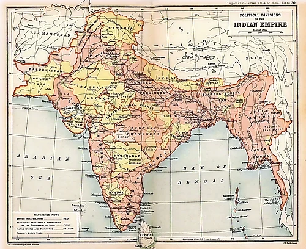

| Provinces | Area (KM2) | Population in Million (19010) | Chief Administratot | Map |
|---|---|---|---|---|
| Major Provinces |  | |||
| Assam Province | 130000 | 6 | Chief Commissioner | |
| Bengal Presidency | 390000 | 75 | Lieutenant-Governor | |
| Bombay Presidency | 320000 | 19 | Governor-in-Council | |
| Central Provinces and Berar | 270000 | 13 | Chief Commissioner | |
| Madras Presidency | 370000 | 38 | Lieutenant-Governor | |
| Punjab | 250000 | 48 | Lieutenant-Governor | |
| Minor Provinces | ||||
| Ajmer-Merwara | 7000 | 477 | ex officio Chief Commissioner | |
| Adaman and Nicobar islands | 78000 | 25 | Chief Commissioner | |
| Coorg Provice | 4100 | 181 | ex officio Chief Commissioner | |